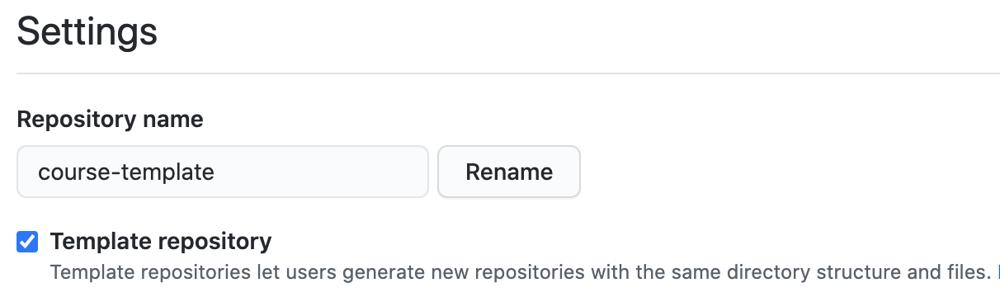

- Take Home Review
- Template Repository
- Collaborating in Github
- Daily Challenge
- Bootstrap Grid
- Take Home Challenge
- Make sure your repository is up-to-date on your master branch and locally.
- Questions?
- Go to your boostrap-boilerplate repository in Github
- From your repo, click "Settings" then, select "Template Repository"
- 
- Create a new repository named "collab-practice". (Use your bootstrap-boilerplate template)
- Add collaborator(s)
- Create a Github issue in your own repository
- Title: Index.html is empty
- Description: The index page needs some content
- Assign a collaborator
- Clone your collaborator's repository (Do not clone your own)
- In your collaborator's repository:
- Create a new branch called "take-home"
- Using the Bootstrap grid, create the following sections in the index file:
- Nav
- Left Column
- Right Column
- Footer
- Give each section a different background-color
- Add, commit and push your changes to your take-home branch